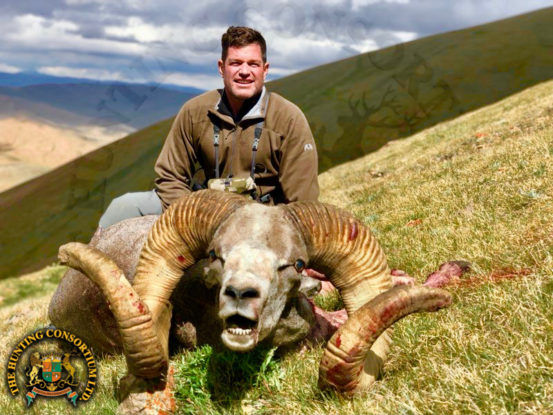

Sheep Hunting in Mongolia

Watch: Sheep Hunting in Mongolia
Data: World Wildlife Population Trends

About Mongolian Sheep Hunting
Mongolia is one of the most remote and breathtaking hunting destinations in the world. Spanning vast mountain ranges, open steppes, and high-altitude plateaus, the country is home to the Argali sheep — the largest wild sheep species on Earth. Hunters from around the world travel to Mongolia for the challenge of pursuing these magnificent animals across some of the most rugged terrain imaginable.
The Mongolian Altai mountain range is the primary hunting ground, with elevations reaching over 10,000 feet. Hunts typically take place in September and October when the weather is cold and the rams are in peak condition. A successful Argali hunt is considered one of the greatest achievements in the world of trophy hunting.
The Argali
The Argali (Ovis ammon) is a wild sheep native to the highlands of Central Asia. In Mongolia, they are found primarily in the Altai and Gobi Altai mountain ranges. Adult rams can weigh up to 400 pounds and carry massive, corkscrew horns that can exceed 60 inches in length. They are incredibly wary animals, often spotted at distances of over a mile, making the stalk one of the most demanding in all of big game hunting.
Hunting Tips
- Physical fitness is critical — expect long days of hiking at high altitude
- Train with weighted pack hikes months in advance
- Practice shooting from field positions like prone and sitting
- Glass extensively before committing to a stalk — Argali have exceptional eyesight
- Hunt with a reputable Mongolian outfitter who knows the local terrain
- Obtain all required CITES permits well in advance — Argali are a protected species
- Be prepared for extreme weather changes at any time
Essential Gear List
- Rifle chambered in a flat-shooting long-range caliber (e.g. .300 Win Mag, 7mm Rem Mag)
- High-quality binoculars (10x42 minimum) and a spotting scope
- Layered cold-weather clothing — temperatures can drop below freezing
- Broken-in, waterproof mountain boots
- Trekking poles for steep descents
- Satellite communicator (no cell service in the field)